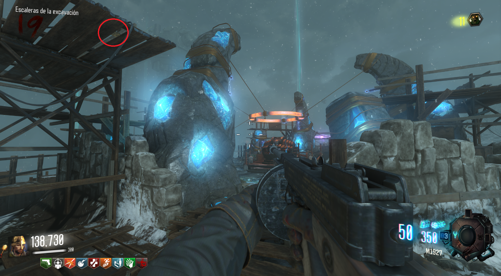
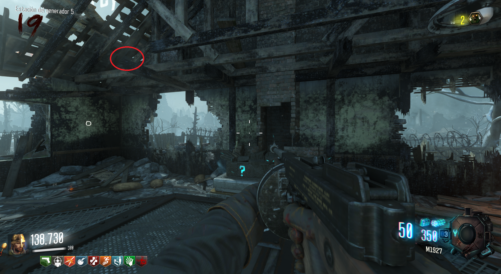
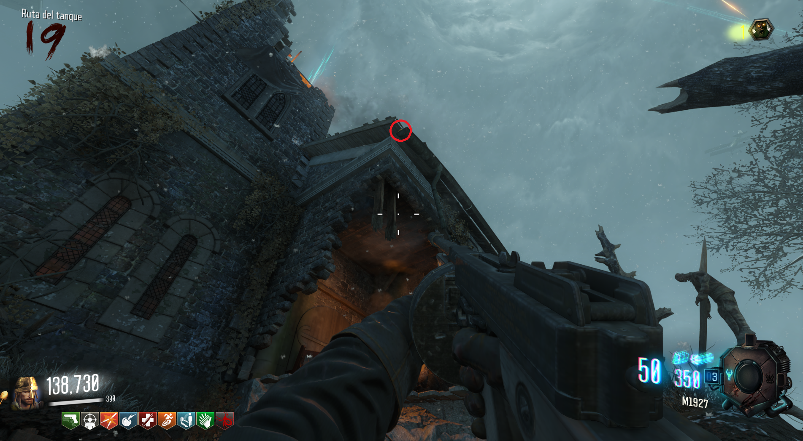
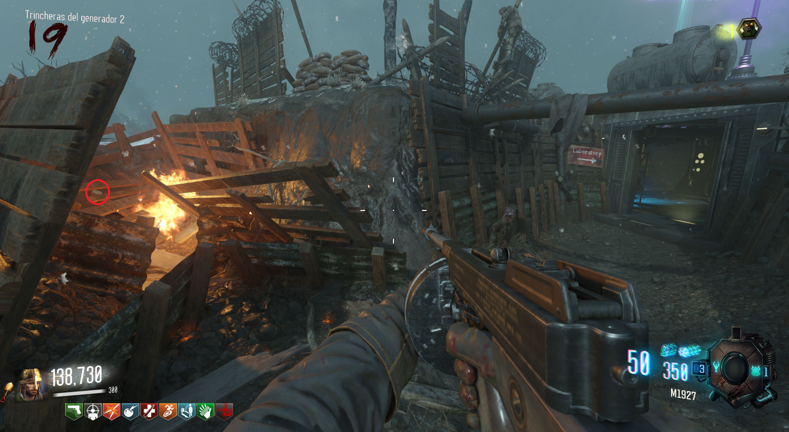
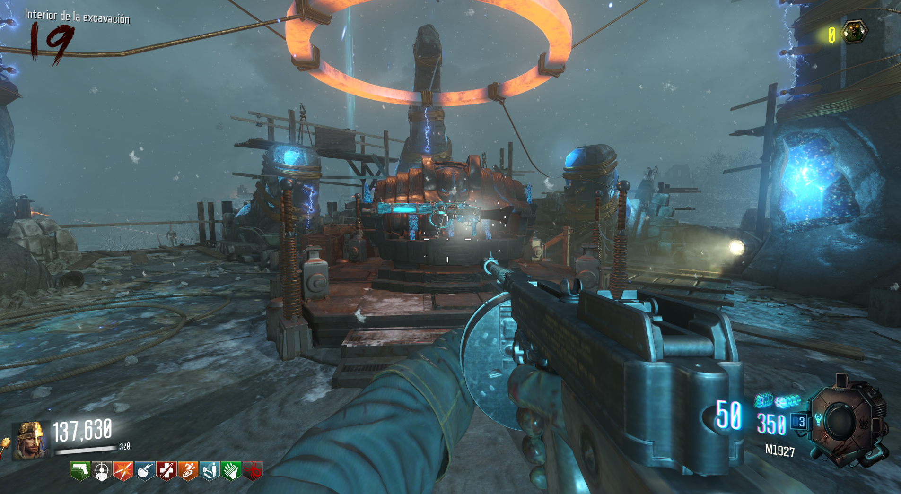

Requisitos:
Tener el Dron de Maxis.
Deberemos de ir con el dron a buscar 4 discos por el mapa:

1. Encima de unas tablas en el PaP.

2. Encima de unas tablas en el generador 5.

3. En el tejado de la iglesia, desde el lugar por donde sale el tanque.

4. Según salimos del Laboratorio hacia generador 2, en unos restos de madera con fuego.
Obtenidos los cuatro discos, encontraremos el arma especial mejorada frente al PaP.
